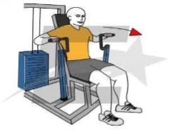
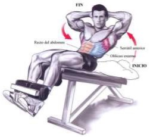
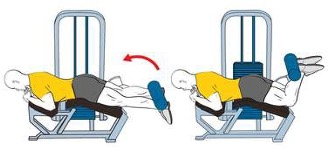

Bíceps y Tríceps.
Curl de bíceps con mancuernas y giro, de neutro a
supino,
alternado. 3 sets x 20 reps a dos manos.
Extensión de tríceps con soga, en polea alta, máquina
#63. 4 sets x 12 a 6 reps.
Tempo: 1 ”exp, 2 ”ctr. 3”.
Tempo: 1 ”exp, 2 ”ctr. 3”.

Curl de bíceps con barra hacia el cuello, de pie,
agarre medio. 4 sets x 12 a 6 reps.
Tempo: 1”exp, 2”, 4”.
Tempo: 1”exp, 2”, 4”.

Press tipo California, con mancuernas, en banco
horizontal. 4 sets x 12 a 6 reps.
Tempo: 3”, 1”exp, 2”ctr
Tempo: 3”, 1”exp, 2”ctr

Curl de bíceps tipo martillo lateral a dos manos. 4
sets
x 12 a 6 reps.
Tempo: 1”exp, 1”ctr, 3”.
Tempo: 1”exp, 1”ctr, 3”.
Rompe cráneos (press francés) con mancuernas y giro,
en
banco horizontal. 4 sets x 12 a 6 reps.
Tempo: 3”, 1”exp, 1”ctr.
Tempo: 3”, 1”exp, 1”ctr.

Curl concentrado, con mancuerna unilateral, con apoyo
en
banco. Giro de neutro a supino. 4 sets x 12 a 6 reps
Tempo: 3”, 1”exp, 1ctr”.
Tempo: 3”, 1”exp, 1ctr”.
Fondos para tríceps con apoyo en banco. 4 sets x 12
reps
o
fallo.
Tempo: 3”, 1”exp, 2”ctr.
Tempo: 3”, 1”exp, 2”ctr.

Flexión y extensión de muñecas para ante brazos, con
barra. 4 sets x 25 reps o fallo.
Pectorales y Hombros.
Pectoral fly (aperturas pectorales) en máquina #21 3
sets x 15 reps.
Tempo: 1”, 1”ctr. 3”.
Tempo: 1”, 1”ctr. 3”.
Press pectoral en maquina #20, agarre prono. 4 sets x
12 a 6 reps.
Tempo: 4”, 1”exp, 2”ctr.

Tempo: 4”, 1”exp, 2”ctr.
Press pectoral, en banco horizontal, con mancuernas y
giro de prono a neutro. 4 sets x 12 a 6 reps.
Tempo: 4”, 1”exp, 2”.
Tempo: 4”, 1”exp, 2”.
Elevaciones laterales P/ hombros, con mancuernas.
Carga de 60% a 70%. 4 sets x 12 a 6 reps.
Tempo: 1”exp, 1”ctr, 3”.
Tempo: 1”exp, 1”ctr, 3”.
Press arnold a dos manos, con mancuernas, sentado en
banco a 90°. 4 sets x 12 a 6 reps. Carga de 70%.
Cross over con mancuernas, de pie o en banco,
cerrando al frente del pectoral. 4 sets x 12 a 6 reps.
Tempo: 1”exp, 1”ctr, 3”.
Tempo: 1”exp, 1”ctr, 3”.
Posteriores en máquina #21, pectoral en el respaldo
(invertido).
4 sets x 10 reps con agarre prono, 10 neutro y 10 invertido. Cada
serie.
Tempo: 1”,1”, 2”.
Tempo: 1”,1”, 2”.
Aperturas pectorales en máquina #21. 4 sets x 12 a 6
reps.
Tempo: 1”exp, 2”ctr, 4”.
Tempo: 1”exp, 2”ctr, 4”.
Crunch con palmada tras los muslos, de forma
alternada. 4 sets x 16 reps, 8 por cada lado.
.-Crunch con ½ giro de columna, con apoyo en los
pies. Giro izquierdo y derecho. 4 sets x 16 reps, 8 por cada lado

Piernas en general.
Sentadilla sin peso, posición neutra, con isometría
por 3” segundos. 3 sets x 10 reps con isometría de 3” cada
repetición.
Sentadilla en maquina Smith #60, posición semi
abierta, puntas ligeramente abiertas.
2 sets x 15 reps con carga del 30% aprox. 2 sets x 12 a 6 reps con carga del 70
% aprox.
Prensa a 45° #09, posición Neutra y pies juntos
parte superior. 2 sets x 12 a 6 reps con posición neutra.
2 sets x 12 a 6 reps con posición pies juntos, en la parte superior de la
plataforma.
Tempo: 4”, 1”exp, 1ctr.
Tempo: 4”, 1”exp, 1ctr.
Extensión de cuádriceps en maquina #02.
3 sets x 12 a 6 reps con tempo: 1”exp, 2”ctr, 4”. Carga del 70%. 1 set x 15 reps
o fallo con tempo: regular. Carga del
80%.
Curl para isquiotibilales en maquina #03, acostado,
con 2 pulsos. 4 sets x 12 a 6 reps.
Tempo: 1”exp, 1”ctr, 4”.

Tempo: 1”exp, 1”ctr, 4”.
Sentadilla tipo sumo, con mancuerna, a dos bancos o
en piso. 3 sets x 12 a 6 reps con tempo: 4” y1”exp. Carga del 70%. 1 set x 16
reps con tempo: parciales regulares. Carga del 80%.
abducción y aducción de caderas en maquina #05 y 06 o
con bandas de resistencia. 4 sets x 16 reps. (hacerlo al inverso
también)
Tempo: 1”exp, 2”ctr, 3”.
Tempo: 1”exp, 2”ctr, 3”.
Sentadilla isométrica sobre ½ bossu, manos al frente.
3 sets x 45” segundos.
Flexión de talones en maquina #01.
4 sets a 3 posiciones, iniciando con neutra e igualmente finalizando, abiertas y
cerradas serían las otras 2.